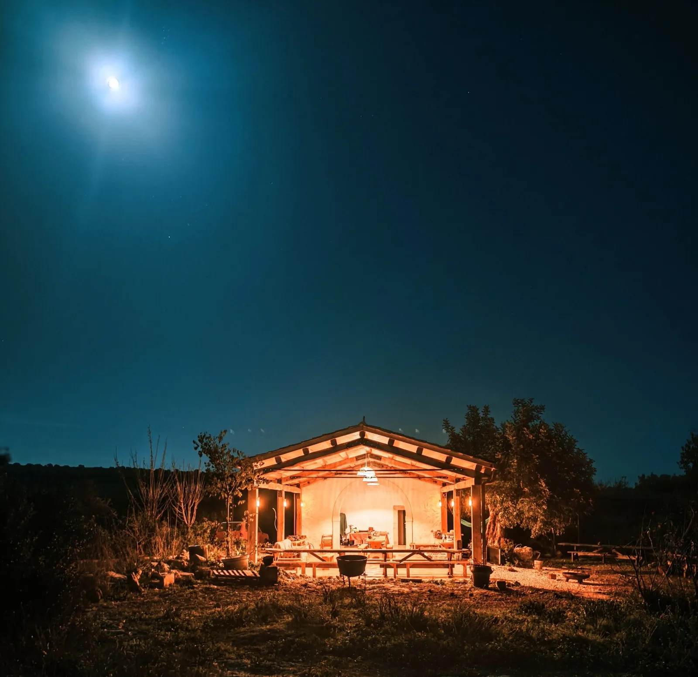
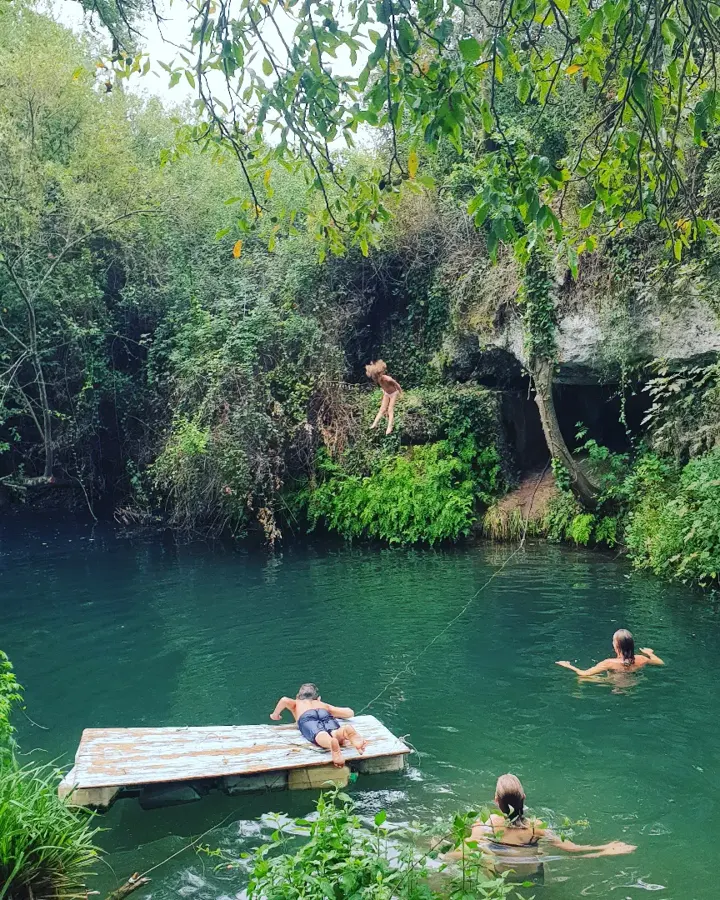
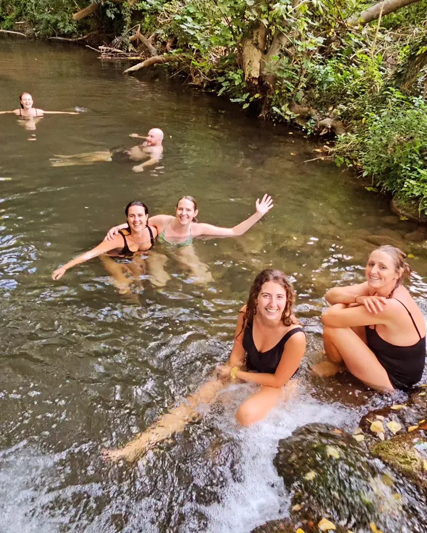
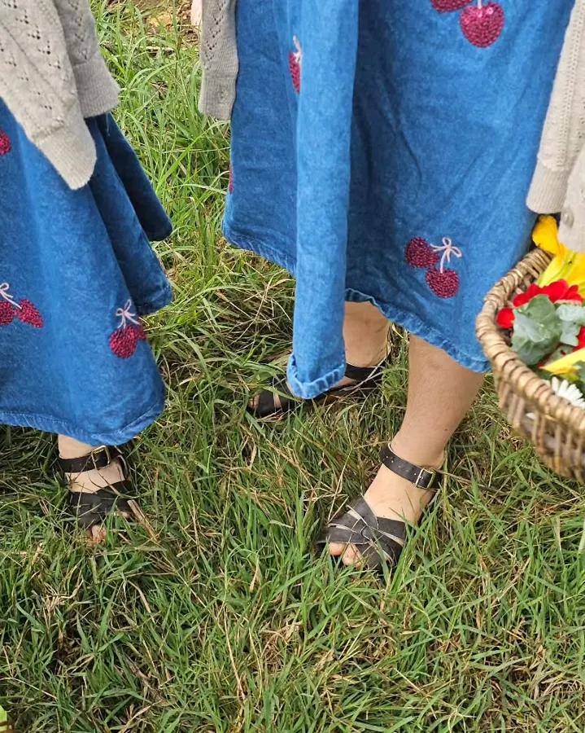
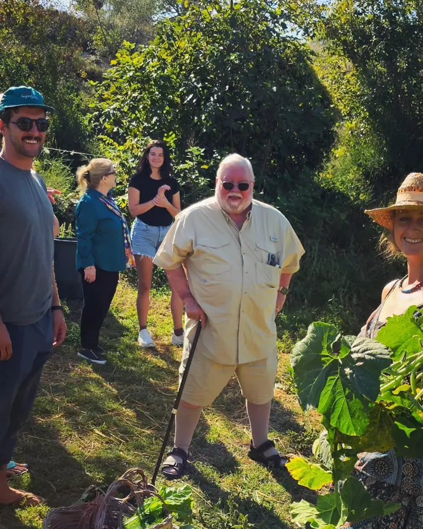
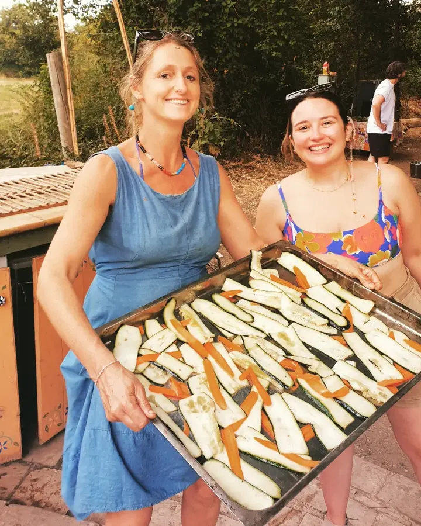

We live inside the Grand Canyon of Sicily.
A private location, shared once you reserve.

The farm is our family home, inside the Grand Canyon of Sicily, the biggest canyon on the island. We are at its very beginning, just before the natural reserve, near the village of Canicattini Bagni in southeastern Sicily. We welcome guests by reservation only. Your exact meeting point and directions arrive with your booking confirmation.
Frequently asked questions
Is it only on Sundays?
No. From April 1 to November 1 we host every day of the week. “Sunday lunch” is the Sicilian tradition we cook, the long family meal, and here every day is Sunday.
When are you open?
Every day from April 1 to November 1. Pick your date in the booking calendar.
Where do I get the best price?
Right here. Booking on our website is €150 per adult and €75 per child aged 2 to 13, less than on other booking sites.
Where is the farm?
Near the village of Canicattini Bagni, in southeastern Sicily. It is our family home, so we share the exact meeting point and directions only after you book.
How long does the day last?
From 9:30 AM until 3:30 or 4:00 PM. Nobody rushes you.
What is included?
Everything: the garden harvest, wine, cheese, honey and olive oil tastings, the ravioli workshop, cooking on the fire, the full lunch with unlimited wine and homemade soft drinks, and a swim in the river in summer.
I am vegetarian, vegan or gluten-free. Can I come?
Most of the meal is vegetables from our garden. Tell us when you book and we will plan around you.
Can children come?
Yes, families are welcome and children love the garden and the river. Children aged 2 to 13 are €75, and children under 2 are free.
What should I bring?
Comfortable shoes, a hat and sun cream. In summer add swimwear, a towel and a change of dry clothes for the river.
What happens if it rains or it is cold?
In cooler months and wet weather we cook and eat in the farmhouse.
How do I get there?
Most guests drive or take a taxi. We are about 25 minutes from Noto, 30 minutes from Siracusa and Ortigia, 45 minutes from Ragusa, 1 hour from Catania and 1.5 hours from Taormina. No car? We can book a trusted taxi for you, and we can help you share the ride with other guests.
Can I cancel?
Yes. Cancel up to 7 days before your day for a full refund. Later cancellations are not refundable. If we have to cancel for weather or safety, you get a full refund. The full terms are linked at the bottom of this page.
Will I appear in your photos or videos?
Possibly. We often film and photograph the day and share it on our website, social media and in our marketing. By booking you agree to this. If you would rather not appear, just tell us when you book or when you arrive and we will leave you out.
Can I book a private day or a gift card?
Yes. Write to us for private tables, celebrations and groups, or choose a gift card when you book.
A question before you book? Write to us.
Carlo and Jessie answer every message themselves, usually within a day. Curious about volunteering on the farm? Ask us too.
Follow our days on the farm







There is a seat for you at our table.
Sunday lunch, served every day of the week. Choose your date and we will send everything you need.